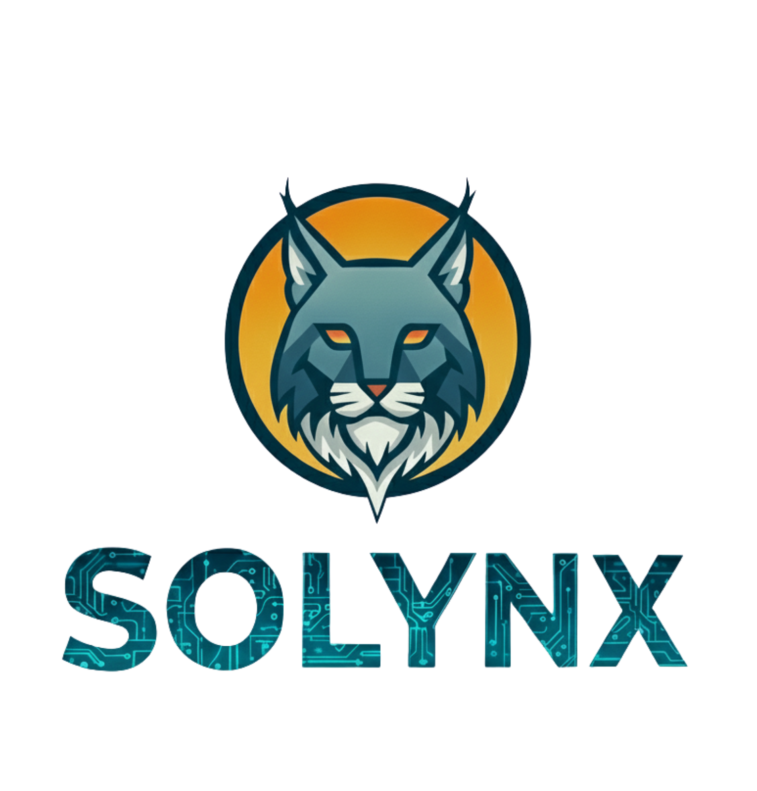

Faster Response
The system activates the moment a lead enters — no waiting, no manual callbacks, no missed windows.

SOLYNX Navigation
Choose where you want to go next.
SOLYNX LIVE EXPERIENCE — RESPONSE SYSTEM ACTIVE

Submit your information and watch SOLYNX instantly respond through automation, CRM workflows, AI chat, voice systems, and follow-up sequences.
Every inbound lead enters the response system instantly with no manual touch required.
Voice, SMS, and email sequences activate automatically so opportunities never go cold.
Leads are organized, tagged, and moved toward a booking path inside the CRM pipeline.
SOLYNX AI Ecosystem — LYNX Chat
LYNX Chat is one part of the SOLYNX AI ecosystem. Submit your information and trigger a real response sequence — AI Chat, CRM capture, SMS follow-up, email automation, and more — so you can experience exactly what your leads should experience across every channel.
 Response System Active
Response System Active
Submit your details below to trigger the full SOLYNX response sequence.
SOLYNX RESPONSE PROTOCOL
24/7
System Active
6+
Channels Connected
∞
Lead Capacity
Response System Active
After you submit, here is the exact sequence that activates inside the SOLYNX response system.
Your information enters the SOLYNX response system and a contact record is created instantly.
A phone response sequence can trigger to simulate instant lead handling — showing how your business could respond before any competitor does.
You receive a message showing how fast automated follow-up can happen — no manual sending, no delay.
A branded email explains the system and continues the conversation on a consistent, automated schedule.
Your lead record is organized, tagged, and routed inside the system so nothing falls through the cracks.
The chat widget and automation layer continue supporting the experience — so the conversation stays open across every channel.
Response Infrastructure
Most businesses lose opportunities because their response process depends on manual callbacks, scattered tools, and inconsistent follow-up. SOLYNX connects the response layer so leads are captured, contacted, organized, and moved toward action with less friction.
The system activates the moment a lead enters — no waiting, no manual callbacks, no missed windows.
SMS, email, and reminders run automatically so follow-up is consistent without relying on memory or manual effort.
Voice, SMS, email, and chat routed through one response infrastructure — no scattered inboxes or missed touchpoints.
Every lead is tracked, tagged, and organized inside a pipeline your team can see and act on.
Leads are guided toward booked outcomes through automation — reducing friction from first contact to confirmed appointment.
Repetitive operational tasks run inside the system so your team can focus on service, relationships, and growth.
Customer Journey Automation
Identify missed calls, slow follow-up, disconnected tools, and the points where leads stall before they convert.
Connect phone, SMS, email, chat, CRM, booking, and automation into one response infrastructure that works as a system.
Deploy automation that responds, follows up, routes, and supports the lead journey before the opportunity goes cold.
Turn the response system into a repeatable operating layer that grows with the business without adding manual overhead.
Operational Response System
When someone reaches out, the system responds quickly and keeps the conversation moving — reducing missed opportunities.
SMS, email, and reminders can run automatically so fewer opportunities slip away between contacts.
Every lead should be tracked, tagged, and organized inside a pipeline so nothing is invisible or unaccounted for.
SOLYNX reduces repetitive admin work so teams can focus on service, sales, and customer relationships that need a human touch.
SOLYNX AI VOICE
Talk to our AI receptionists directly in your browser, or place a real phone call to experience how SOLYNX answers, qualifies, and routes opportunities automatically.
Browser voice requires microphone permission. Phone call buttons work best on mobile devices.
Talk to Alex directly in your browser or dial in by phone.
Answers calls. Captures leads. Books appointments.
📞 (855) 408-5969
Habla con Lexy directamente en tu navegador o llama por teléfono.
Contesta llamadas. Captura prospectos. Agenda citas.
📞 (831) 777-6198
Now Imagine This Running Inside Your Business
You just experienced the front end of a SOLYNX response system. Now let's map where your business is losing leads and what automation could recover those opportunities.
Book My Growth Audit